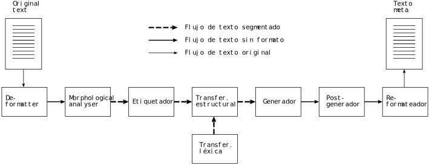

Documentation of the Open-Source Shallow-Transfer Machine-Translation Platform Apertium
This is an early draft. Contribute to this documentation on Github.
AUTHORS
Of version 2.0 of the documentation:
Mikel L. Forcada
Boyan Ivanov Bonev
Sergio Ortiz Rojas
Juan Antonio Pérez Ortiz
Gema Ramírez Sánchez
Felipe Sánchez Martínez
Carme Armentano-Oller
Marco A. Montava
Francis M. Tyers
EDITOR
Mireia Ginestí Rosell
Departament de Llenguatges i Sistemes Informàtics
Universitat d’Alacant
Of this document:
Ilnar Salimzianov
Copyright © 2007 Grup Transducens, Universitat d’Alacant. Permission is granted to copy, distribute and/or modify this document under the terms of the GNU Free Documentation License, Version 1.2 or any later version published by the Free Software Foundation; with no Invariant Sections, no Front-Cover Texts, and no Back-Cover Texts. A copy of the license can be found in http://www.gnu.org/copyleft/fdl.html.
Version 2.0 of the official Apertium documentation can be found here. The LaTeX source file is archived on Sourceforge.
In addition, there is a lot of information on the wiki of the project.
The goal of this document is two-fold:
describe what has changed in Apertium since the above mentioned documentation has been published (especially as a result of contributions made by the Google Summer of Code students), and
consolidate the most important information spread across many different wiki pages into a single document (with pointers to more information on the wiki and elsewhere).
1 Introduction
This documentation describes the Apertium platform, one of the open-source machine translation systems which originated within the project “Open-Source Machine Translation for the Languages of Spain” (“Traducción automática de código abierto para las lenguas del estado español”). It is a shallow-transfer machine translation system, initially designed for the translation between related language pairs, although some of its components have been also used in the deep-transfer architecture (Matxin) that has been developed in the same project for the pair Spanish-Basque.
Existing machine translation systems available at present for the pairs es–ca and es–gl are mostly commercial or use proprietary technologies, which makes them very hard to adapt to new usages; furthermore, they use different technologies across language pairs, which makes it very difficult to integrate them in a single multilingual content management system.
One of the main novelties of the architecture described here is that it has been released under open-source licenses (in most cases, GNU GPL; some data still have a Creative Commons license) and is distributed free of charge. This means that anyone having the necessary computational and linguistic skills will be able to adapt or enhance the platform or the language-pair data to create a new machine translation system, even for other pairs of related languages. The licenses chosen make these improvements immediately available to everyone. We therefore expect that the introduction of this of open-source machine translation architecture will solve some of the mentioned problems (having different technologies for different pairs, closed-source architectures being hard to adapt to new uses, etc.) and promote the exchange of existing linguistic data through the use of the XML-based formats defined in this documentation. On the other hand, we think that it will help shift the current business model from a license-centered one to a services-centered one.
It is worth mentioning that “Open-Source Machine Translation for the Languages of Spain” was the first large open-source machine translation project funded by the central Spanish Government, although the adoption of open-source software by the Spanish governments is not new.
2 The shallow-transfer machine translation engine
This chapter describes briefly the structure of the shallow-transfer machine translation engine, which is largely based on that of the existing systems for Spanish–Catalan interNOSTRUM [???] [???] [???] and for Spanish–Portuguese Traductor Universia [5] [???], both developed by the Transducens group of the Universitat d’Alacant. It is a classical indirect translation system that uses a partial syntactic transfer strategy similar to the one used by some commercial MT systems for personal computers.
The design of the system makes it possible to produce MT systems that are fast (translating tens of thousands of words per second on ordinary desktop computers) and that achieve results that are, in spite of the errors, reasonably intelligible and easily correctable. In the case of related languages such as the ones involved in the project (Spanish, Galician, Catalan), a mechanical word-for-word translation (with a fixed equivalent) would produce errors that, in most cases, can be solved with a quite rudimentary analysis (a morphological analysis followed by a superficial, local and partial syntactic analysis) and with an appropriate treatment of lexical ambiguities (mainly due to homography). The design of our system follows this approach with very interesting results. The Apertium architecture uses finite-state transducers for lexical processing, hidden Markov models for part-of-speech tagging and finite-state-based chunking for structural transfer.
The translation engine consists of an 8-module assembly line, which is represented in Figure \ref{fg:modules}. To ease diagnosis and independent testing, modules communicate between them using text streams. This way, the input and output of the modules can be checked at any moment and, when an error in the translation process is detected, it is easy to test the output of each module separately to track down the origin of the error. At the same time, communication via text allows for some of the modules to be used in isolation, independently from the rest of the MT system, for other natural-language processing tasks, and enables the construction of prototypes with modified or additional modules.
We decided to encode linguistic data files in XML\footnote{\url{http://www.w3.org/XML/}}-based formats due to its interoperability, its independence of the character set and the availability of many tools and libraries that make easy the analysis of data in this format. As stated in \cite{ide00}, XML is the emerging standard for data representation and exchange in Internet. Technologies around XML include very powerful mechanisms for accessing and editing XML documents, which will probably have a significant impact on the development of tools for natural language processing and annotated corpora.
Figure 1: The eight modules that build the assembly line of the shallow-transfer machine translation system.

3 Format specification of the data stream between modules
The format of the data that circulate between the engine’s modules has to be specified so that document processing is more effective and transparent. The proposed system design (see Section \ref{ss:descrarq}) imposes the need to use three different data stream types, as shown in figure 2.
The stream format is text-based to facilitate, among other things, the diagnosis of possible system errors, since it is easy to manipulate the stream in order to reproduce the phenomena that are to be tested, and change it to see the result. Other benefits of using text streams are that it is possible to test independently the output of each module, and that it allows for fast building of prototypes to test the system’s global performance, the validity of linguistic data, etc.

Figure 2: Three different data stream types in the machine translation system.
The data stream types are:
Data stream with format: It is the text in its original format, with no further marks: XML, ANSI text, RTF, HTML, etc. Since it is the original format of the documents, nothing needs to be specified about it except the name of the format.
Data stream without format: It is the text with superblanks, that is, with special characters that encapsulate the format (see (part "ss:formato")); superblanks are treated by the linguistic modules as blanks between words (with some exceptions). This is the format generated by the de-formatter and used by the re-formatter when generating the final translated document.
Segmented data stream: In this format, apart from superblanks, lexical units that are to be translated are delimited also with special characters. These characters are put by the morphological analyser and deleted by the generator, which delivers the final surface forms.
We describe next the characteristics of the data stream used between the modules of the translator, that is, the second and the third stream types. In general terms, it is a plain text format marked with characters that have a special meaning. This format is intended for the processing in servers that translate large volumes of text.
Some of the formats that the engine can process may contain extensive
blocks of information in binary format —